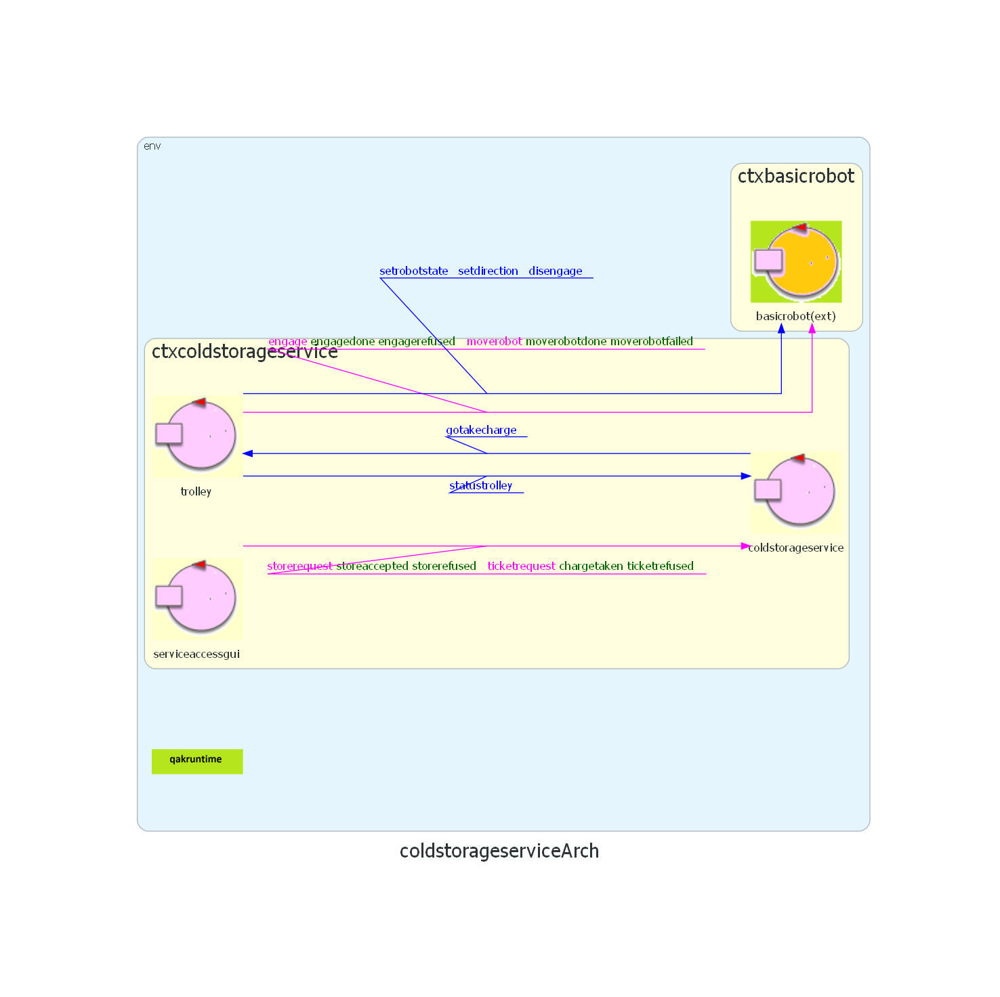

Introduction
Sprint 0: lo Sprint 0 si è occupato dell'analisi dei requisiti del sistema. Si è concluso con la definizione di una prima architettura logica:

Requirements
User stories:
in questo Sprint saranno considerati solamente i keypoints 1, 2, 3
e 4, che costituiscono il
Al modello definito nello Sprint 0, lo Sprint 1 aggiunge:
- il movimento del trolley
- le interazioni tra i componenti
Requirement analysis
Nello
- mappa della service area, costruita da celle quadrate di lato RD
- posizione, introducendo coppie di coordinate cartesiane per identificare ogni cella
KEYPOINTS
- gestione del movimento del trolley
- interazione tra i componenti
- richieste multiple
Problem analysis
Movimento del trolley
Come già indicato, il committente offre il servizio BasicRobot24. Il servizio realizza un insieme di funzionalità diverse:
-
esegue comandi elementari di movimento
Dispatch cmd:cmd(MOVE) -
introduce il concetto di
step del robotRequest step:step(T)
Per costruire dinamicamente una sequenza di mosse con cui il robot può muoversi dalla posizione corrente
r a un’altra posizione (libera) sulla
mappa,
si può usare un pianificatore come quello fornito dal committente in
-
il componente
robotpos , usando il planner, gestisce le richieste di posizionamentoRequest moverobot:moverobot(TARGETX, TARGETY) -
determina un piano di movimento per raggiungere la destinazione che viene eseguito tramite
planexec - la risposta può essere moverobotdone in caso di successo, moverobotfailed in caso di fallimento
-
usa il comando
Dispatch setrobotstate:setpos(X,Y,D)
-
determina un piano di movimento per raggiungere la destinazione che viene eseguito tramite
-
il componente
planexec gestisce le richiesteRequest doplan:doplan(PATH,STEPTIME) -
invia la sequenza di mosse al
basicrobot e riceve in risposta doplandone in caso di successo, doplanfailed in caso di ostacolo o di evento alarm - non usa e non modifica la mappa della stanza
-
invia la sequenza di mosse al
Interazione tra i componenti
Il
-
invia un messaggio
Dispatch gotakecharge : gotakecharge( TICKET, LOAD ) trolley -
torna nello stato di waitrequest così da poter gestire eventuali richieste che arrivano da altri
utenti. Quando riceve la notifica di completamento dell'azione del trolley, invia alla
serviceaccessgui la rispostaReply chargetaken : chargetaken( TICKET ) INDOOR port .
Per poter realizzare l'interazione tra trolley e servizio, si è scelto di implementare il Pattern Observer:
-
il trolley prende in carico il cibo alla
INDOOR port e, una volta conclusa l'operazione, notifica il cambiamento di stato al servizio - il servizio in seguito risponde alla richiesta dell'utente, confermando con successo il risultato
Richieste multiple
Per la gestione delle richieste aperte, viene mantenuta una lista list in cui ogni richiesta viene memorizzata con
- il numero del ticket associato
- il peso del carico
- il timestamp della ricezione del ticket
Architettura del sistema
L'architettura del sistema è la seguente:

Qui è possibile visualizzare il modello definito:
link modello
Project
SERVICE ACCESS GUI
QActor serviceaccessgui context ctxcoldstorageservice {
[# var Counter = 1 #]
State s0 initial {
delay 1500 // Allow time for other actors to initialize
printCurrentMessage
println("$name START ") color blue
}
Goto sendstore
// single request
State sendstore {
[# var CurrentWeight = ( Math.round( Math.random() * 100 ) ) #]
println("$name SEND REQUEST kg $CurrentWeight") color blue
request coldstorageservice -m storerequest : storerequest($CurrentWeight)
}
Transition t0 whenReply storeaccepted -> sendticket
whenReply storerefused -> endwork
// send the second request to the service
State sendticket {
delay 1000
onMsg( storeaccepted : storeaccepted( TICKET, KG ) ) {
[#
var TicketNumber = payloadArg(0)
var Load = payloadArg(1)
#]
println("$name MOVING TO INDOOR --> ticket: $TicketNumber, $Load kg ") color blue
delay 2000
println("$name SENDING TICKET: $TicketNumber") color blue
request coldstorageservice -m ticketrequest : ticketrequest($TicketNumber)
}
}
Transition t0 whenReply chargetaken -> endwork
whenReply ticketrefused -> endwork
//endwork
State endwork{
onMsg( storerefused : storerefused( X ) ) {
[# var Load = payloadArg(0) #]
println("$name - request of $Load kg refused. Not enough free space...") color blue
}
onMsg( ticketrefused : ticketrefused( X ) ) {
[# var TicketNumber = payloadArg(0) #]
println("$name - request n. $TicketNumber refused. Too much time has passed...") color blue
}
onMsg( chargetaken : chargetaken( X ) ) {
[# var TicketNumber = payloadArg(0) #]
println("$name - request n. $TicketNumber accepted and stored. All requests sent!") color blue
}
println("$name BYE ") color blue
}
}
La
COLD STORAGE SERVICE
QActor coldstorageservice context ctxcoldstorageservice {
[#
val list = mutableListOf<Triple<Int, Float, Long>>()
var MAXW = 200
var TICKETTIME = 15
var CurrentLoad = 0f
var TicketNumber = 1
#]
State s0 initial {
delay 1000 // Allow time for other actors to initialize
observeResource trolley msgid statustrolley
println("$name OBSERVING RESOURCE statustrolley FROM trolley") color red
printCurrentMessage
println("$name START ") color green
}
Goto waitrequest
// wait request
State waitrequest {
println("$name waiting for requests... ") color green
}
Transition t0 whenRequest storerequest -> handlestore
whenRequest ticketrequest -> handleticket
whenMsg statustrolley -> handletrolley
// handle the first request
State handlestore {
onMsg( storerequest : storerequest( KG ) ) {
[#
var LoadToStore = payloadArg(0).toFloat()
var FreeSpace = MAXW - CurrentLoad
#]
println("$name received request to store $LoadToStore kg") color green
if [# LoadToStore <= FreeSpace #] {
println("$name accepting load of $LoadToStore kg ") color green
println("$name generating ticket n. $TicketNumber") color green
[#
list.add( Triple( TicketNumber, LoadToStore, System.currentTimeMillis() ) )
CurrentLoad = CurrentLoad + LoadToStore
#]
println("Current load in the cold room: $CurrentLoad ")
replyTo storerequest with storeaccepted : storeaccepted( $TicketNumber, $LoadToStore )
[# TicketNumber = TicketNumber + 1 #]
} else {
println("$name refusing load of $LoadToStore kg") color green
replyTo storerequest with storerefused : storerefused( $LoadToStore )
}
[#
println(list)
#]
}
}
Goto waitrequest
// handle the second request
State handleticket {
onMsg( ticketrequest : ticketrequest( X ) ) {
[# var Ticket = payloadArg(0).toInt() #]
println("$name received ticket n. $Ticket") color green
[#
val request = list.find { it.first == Ticket }
var ElapsedTime = ( System.currentTimeMillis() - request!!.third )
var Load = request.second
#]
if [# ( ElapsedTime/1000 ) < TICKETTIME #] {
println("$name accepting ticket n. $Ticket ($Load kg)") color green
println("$name sending request to trolley...") color green
forward trolley -m gotakecharge : gotakecharge( $Ticket, $Load )
//replyTo ticketrequest with chargetaken : chargetaken( $TicketNumber )
} else {
println("$name refusing ticket n. $Ticket ($Load kg) - EXPIRED ") color green
replyTo ticketrequest with ticketrefused : ticketrefused( $TicketNumber )
[#
CurrentLoad = CurrentLoad - Load
list.remove(request)
println(list)
#]
}
}
}
Goto waitrequest
State handletrolley {
onMsg( statustrolley : statustrolley ( X, Y ) ) {
[#
var Ticket = payloadArg(0)
var Status = payloadArg(1)
#]
if [# Status == "init" #] {
println("$name - received the update of $Status ")
}
if [# Status == "takeload" #] {
println("$name - trolley is in status: $Status for ticket $Ticket ")
println("$name - sending CHARGE TAKEN...")
replyTo ticketrequest with chargetaken : chargetaken( $Ticket )
[#
val request = list.find { it.first == Ticket.toInt() }
list.remove(request)
println(list)
#]
}
}
}
Goto waitrequest
// timeout?
State endwork {
println("$name END WORK.")
delay 1000 //avoid to premature abort of connection
[# System.exit(0) #]
}
}
Modifiche rispetto allo Sprint 0:
- alle variabili di sistema viene aggiunta list, per tenere traccia delle richieste aperte
-
s0: il
coldstorageservice si registra comeobserver del trolley per i messaggistatustrolley -
waitrequest: oltre alle due possibili richieste inviate dalla
serviceaccessgui , il servizio gestisce anche i messaggi del trolley -
handlestore: se la richiesta è accettata, viene aggiunta la tripla
corrispondente alla lista. Ogni richiesta è identificata da
- TicketNumber: il numero del ticket
- LoadToStore: il peso del carico
- System.currentTimeMillis(): il timestamp di ricezione della richiesta
-
handleticket: se il ticket non è scaduto, viene inviato al trolley un
messaggio per muoverlo in direzione della
INDOOR port -
handletrolley: una volta che il trolley ha preso il carico, il servizio chiude la
richiesta inviando il messaggio finale
chargetakene rimuove la richiesta dalla lista
TROLLEY
QActor trolley context ctxcoldstorageservice {
[#
var Status = "init"
var Ticket = 0
var Load = 0f
#]
State s0 initial {
updateResource [# "statustrolley( $Ticket, $Status )" #] // Ensure the resource exists
println("$name UPDATED RESOURCE statustrolley( $Ticket, $Status )") color red
printCurrentMessage
println("$name START ") color magenta
println("$name engage BASIC ROBOT ") color magenta
request basicrobot -m engage: engage(trolley, 150)
}
Transition t0 whenReply engagedone -> waitrequest
// wait for a request
State waitrequest {
forward basicrobot -m setrobotstate : setpos(0,0,down)
println("$name waiting for requests...") color magenta
}
Transition t0 whenMsg gotakecharge -> gotoindoor
// go to indoot
State gotoindoor {
println("$name moving to INDOOR") color magenta
onMsg( gotakecharge : gotakecharge( TICKET, LOAD ) ){
[#
Ticket = payloadArg(0).toInt()
Load = payloadArg(1).toFloat()
#]
println("$name taking charge - ticket n. $Ticket, $Load kg ") color magenta
//replyTo gotakecharge with chargetaken : chargetaken( $Ticket )
//updateResource
}
delay 500 // simulate the movement
request basicrobot -m moverobot : moverobot (0,4) //(0,4) position of INDOOR
}
Transition t0 whenReply moverobotdone -> takeload
whenReply moverobotfailed -> failed
// take the load
State takeload {
[# Status = "takeload" #]
println("$name taking the load...") color magenta
//[# CommUtils.waitTheUser("$name HIT to terminate load") #] //simulate the command
delay 500
updateResource [# "statustrolley( $Ticket, $Status )" #]
println("$name UPDATED RESOURCE statustrolley( $Ticket, $Status )") color red
}
Goto gotocoldroom
// go to cold room
State gotocoldroom {
println("$name moving to COLDROOM") color magenta
request basicrobot -m moverobot: moverobot(4,3)
delay 5000 // simulate the movement
}
Transition t0 whenReply moverobotdone -> storeload
whenReply moverobotfailed -> failed
// store the load
State storeload {
println("$name storing the load...") color magenta
delay 500
// waits for requests
}
Transition t0 whenTime 2000 -> gohome
whenMsg gotakecharge -> gotoindoor
// go home
State gohome{
println("$name going HOME...") color magenta
request basicrobot -m moverobot: moverobot (0 ,0)
delay 2000 // simulate the movement
}
Transition t0 whenReply moverobotdone -> trolleyathome
whenReply moverobotfailed -> failed
// at home
State trolleyathome {
forward basicrobot -m setdirection : dir(down)
println("$name trolley at home") color magenta
forward basicrobot -m disengage : disengage(trolley)
println("$name disengaged") color magenta
delay 1000 //avoid to premature abort of connection
[# System.exit(0) #]
}
//failed
State failed {
println("$name action failed") color magenta
}
Goto gohome
}
Modifiche rispetto allo Sprint 0:
- viene aggiunta una variabile Status per tenere traccia dello stato del trolley
-
il
trolley richiede l'ingaggio delrobot con step time di150 ms -
waitrequest: il messaggio
setrobotstate : setpos(0, 0, down)imposta il robot nella posizioneHOME per settarlo correttamente all'avvio -
gotoindoor: una volta ricevuto il messaggio
gotakechargedal sistema, il robot si sposta alla posizione (0, 4), posizione dellaINDOOR port - moverobotdone: in caso di spostamento riuscito, il trolley carica il cibo
- moverobotfailed: se lo spostamento fallisce, il robot ritorna alla
HOME
- takeload: una volta caricato il carico, il trolley aggiorna il proprio stato
-
gotocoldroom: il trolley invia al robot la richiesta
moverobot(4, 3)per raggiungere la porta di accesso allacold room - moverobotdone: il carico viene scaricato
- moverobotfailed: se lo spostamento fallisce, il robot ritorna alla
HOME
-
storeload: una volta scaricato il carico nella
cold room :- se c'è un'altra richiesta, il robot torna alla
INDOOR port per ripetere le operazioni - se entro un dato intervallo di tempo non arrivano altre richieste, il robot
torna in
HOME
- se c'è un'altra richiesta, il robot torna alla
-
gohome: il trolley invia una richiesta
moverobot(0, 0)per riportare il robot alla posizione iniziale - trolleyathome: il trolley ruota il robot per riportarlo nella direzione iniziale e viene disingaggiato, per poi uscire dal sistema
Test plans
Come nello sprint precedente, per testare la corretta gestione delle richieste inviate al sistema
è stata realizzata una variante del modello in cui i messaggi non vengono inviati dalla
storeRequestTest()
public class ColdStorageServiceTestSprint1 {
public static final String ADDR = "localhost";
public static final int PORT = 8015;
public static final String MSG = "msg( storerequest, request, serviceaccesgui, coldstorageservice, storerequest(5), 5 )";
public static final String REPLY = "storeaccepted";
@Test
public void storeRequestTest() {
try (
Socket client = new Socket(ADDR, PORT);
BufferedWriter out = new BufferedWriter(new OutputStreamWriter(client.getOutputStream()));
BufferedReader in = new BufferedReader(new InputStreamReader(client.getInputStream()))
){
// send store request
out.write(MSG);
out.newLine(); // ensure the message ends properly
out.flush();
//wait for response
String response = in.readLine();
assertNotNull("The response is null", response);
assertTrue("The response doesn't contain 'storeaccepted'", response.contains(REPLY) );
} catch (IOException e) {
// TODO Auto-generated catch block
e.printStackTrace();
}
}
Test sul funzionamento del sistema: viene inviata la richiesta di depositare un numero di KG inferiore a
MAXW e si verifica che la richiesta venga accettata.
handleTicketTest()
@Test
public void handleTicketTest() {
try (
Socket client = new Socket(ADDR, PORT);
BufferedWriter out = new BufferedWriter(new OutputStreamWriter(client.getOutputStream()));
BufferedReader in = new BufferedReader(new InputStreamReader(client.getInputStream()))
) {
// send store request
out.write(MSG);
out.newLine();
out.flush();
// wait for response
String response = in.readLine();
assertNotNull("The response is null ", response);
assertTrue("The response doesn't contain 'storeaccepted' ", response.contains(REPLY));
// extract ticket number
String ticketNumber = response.replaceAll("[^0-9]+", " ").trim().split(" ")[0];
System.out.println("Extracted ticket number: " + ticketNumber);
// Wait before sending the second request
Thread.sleep(3000); // Or use TimeUnit.MILLISECONDS.sleep(1000);
// Send second request using the ticket
String ticketRequest = "msg( ticketrequest, request, serviceaccesgui, coldstorageservice, ticketrequest(" + ticketNumber + "), 6 )";
out.write(ticketRequest);
out.newLine();
out.flush();
// Wait for response
String ticketResponse = in.readLine();
assertNotNull("The response to the ticket is null ", ticketResponse);
assertTrue("The ticket is expired... ",
ticketResponse.contains("chargetaken"));
} catch (IOException | InterruptedException e) {
e.printStackTrace();
fail("Exception thrown during test execution: " + e.getMessage());
}
}
Test sulla gestione della seconda richiesta: dopo aver ricevuto il ticket, viene inviata una
seconda richiesta al sistema prima dello scadere del TICKETTIME e il ticket risulta valido.
Piano di lavoro
| SPRINT2 |
|
| SPRINT3 |
|